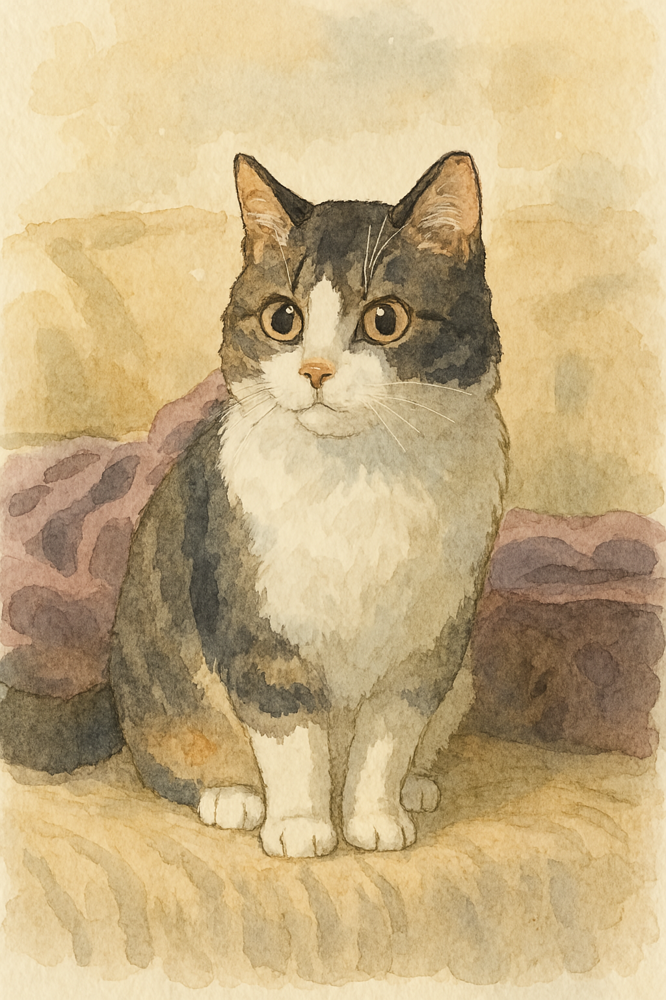

Fernando Tonini, PhD
Bienvenidxs a mi web laboral
En esta página voy a ir subiendo mis publicaciones, presentaciones en congresos, recursos y algunos posteos en el blog.
Read More →

En esta página voy a ir subiendo mis publicaciones, presentaciones en congresos, recursos y algunos posteos en el blog.
Read More →